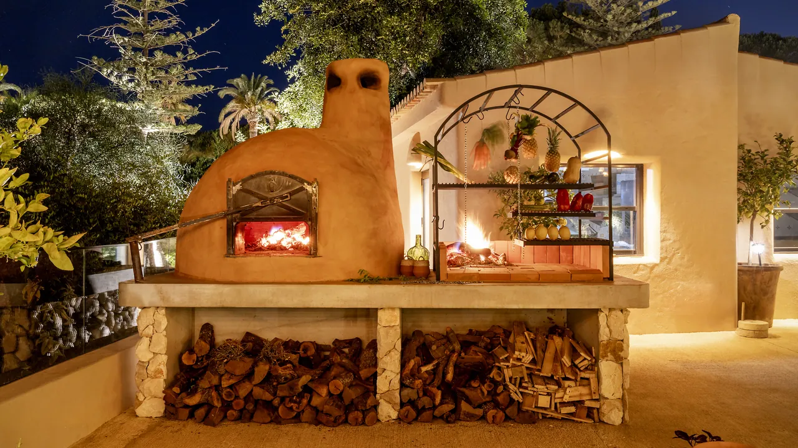
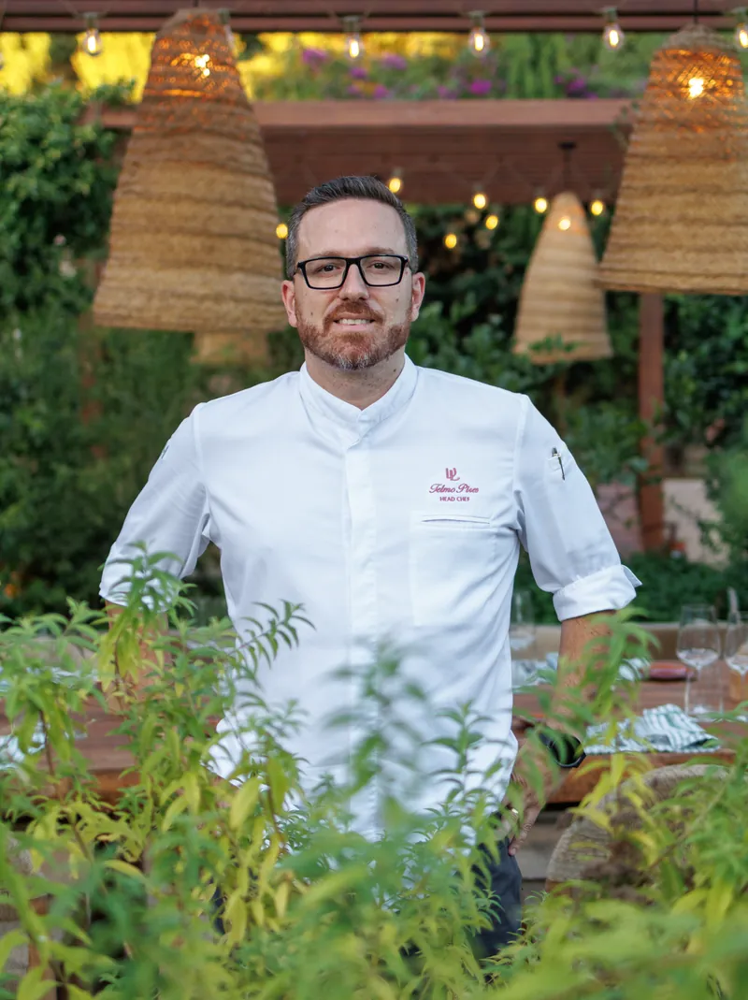
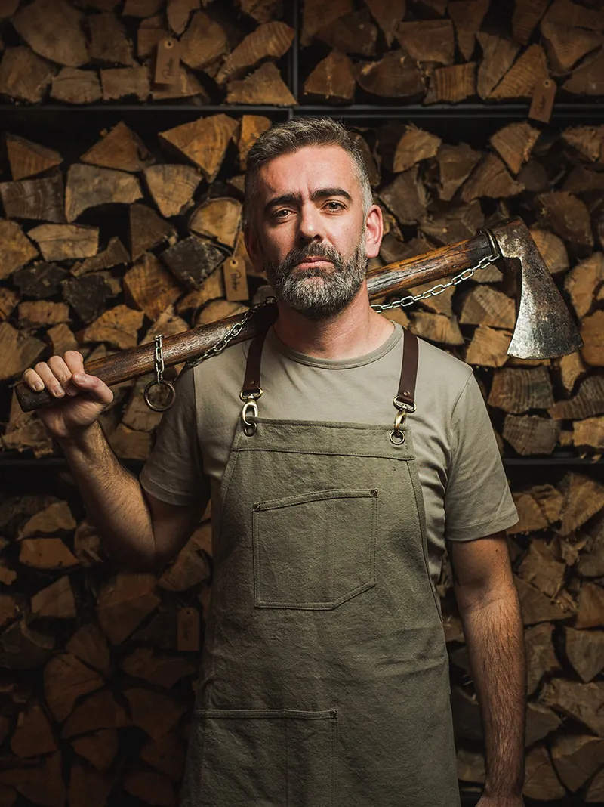

Raízes - 5 September
Fogo
Im Raízes gibt es kein Gas. Es gibt Holz, und es gibt Geduld. Am 5. September kocht Alexandre Silva vierhändig mit Telmo Pires über der Glut, der Gast und der Küchenchef am selben Feuer. Verhaltene Intensität, tiefer Geschmack, und die Zeit, die der Rauch verlangt.
Chefs

Telmo Pires
In der Algarve verwurzelt und vom Feuer geführt, feiert Telmo Pires die Aromen des Landes. Im Raízes verbinden sich regionales Produkt, Tradition und die Wärme der Flamme zu einer Küche zum Teilen.

Alexandre Silva
Mit dem Feuer im Zentrum erkundet Alexandre Silva die Tiefe und den Charakter der portugiesischen Küche. Der mit einem MICHELIN Stern ausgezeichnete Koch bringt nach Vilalara eine Küche aus Feuer, herausragendem portugiesischem Produkt und tiefer Verbundenheit mit der Tradition.
Fusion der Aromen
Raízes ruht auf drei Dingen: dem Produkt, dem Feuer, und der langen Tafel, die alle teilen. Nur ein Abend, am 5. September.
Zurück zu den Abenden